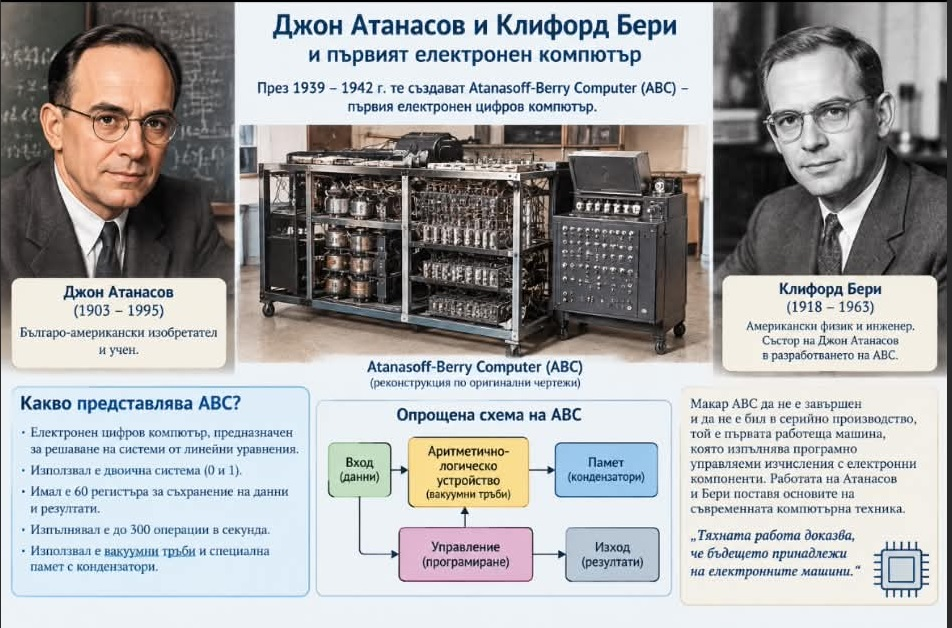
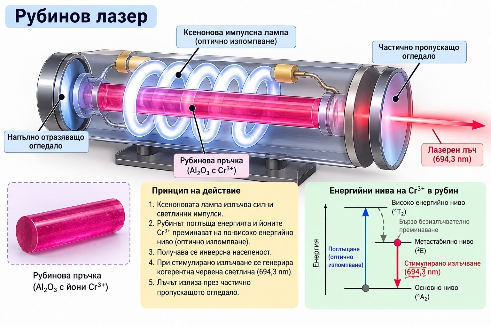
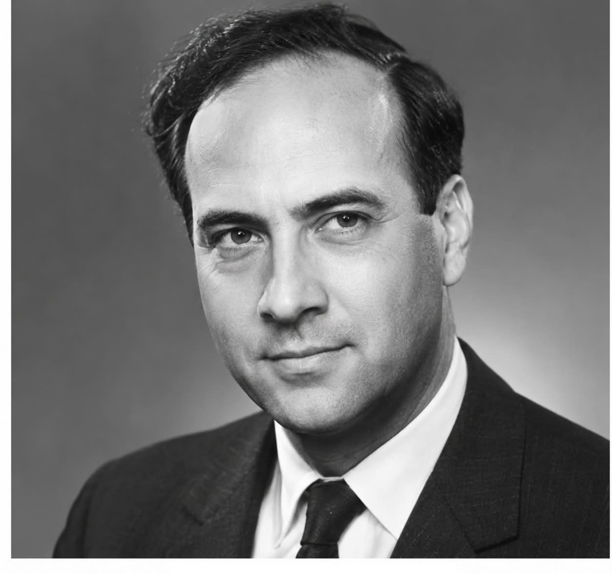

Изобретатели
Изобретение е предмет, процес или техника, които съдържат елемент от иновация (нововъведение). В определени случаи дадено изобретение е под правна защита по силата на патент. През различните времена човечеството е изобретявало предмети и методи за осъществяване на задачи, които са водели до даден резултат по нов или различен начин, като обикновено целта е била резултатът да бъде достигнат по-бързо, по-ефикасно, по-лесно или по-евтино.
Телеграф

Фотоапарат

Роден в град Шалон-сюр-Саон в Бургундия в аристократично семейство. Баща му е бил съветник на Луи XV, майка - дъщеря на известен адвокат. През 1816 г., Ниепс започва да работи върху производството на фотографски изображения. Първоначално се използва сребърна сол, която се превръща черно при излагане на дневна светлина. През 1829 г., 64-годишният Ниепс е бил болен. Той и брат му Клод похарчили всичките си пари, получени по наследство, на различни изобретения, но никой не ги е направил богати. Ниепс умира през 1833 г.
Луи Дагер е човекът, който към края на 30-те години на 19-ти век успява да разработи първия практически начин за фотографиране. Дагер е роден в град Кормей, Северна Франция. Като младеж е художник. Когато става на 35 години той създава т. нар. ДИОРАМА, фантастична поредица от панорамна живопис, изложена със специални светлинни ефекти. В 1837 година вече е успял да разработи практически метод за фотографиране.
Първите фотоапарати се появяват на пазара през 1839 г.
Телефон

Александър Бел е роден в шотландския град Единбург. Още в Шотландия Бел започва да се интересува от възможността да се предават сигнали по електрическите проводници. През 1876 г. той получава патент на САЩ No 174465, описващ «метод и апарат… за предаване на говор и други звуци по телеграфа с помощта на електрически вълни». Фактически става дума за телефона.
Фонограф

Всестранно развитият изобретател Томас Алва Едисон е роден в градчето Милано в американския щат Охайо. Едисон създава първото си изобретение - гласозаписващ уред, когато е само на двадесет и една години. Може би най-оригиналното му изобретение е ФОНОГРАФЪТ (първообразът на грамофона), който патентова през 1877 г. Много по-същественo за бита е изобретяването на електрическата лампа в 1879г.
Киномашина

Братята Люмиер (на френски lumière означава светлина) са считани за основоположници на киното и едни от първите сценаристи, режисьори и оператори. Първият филм, направен от тях се нарича "Работници напускат фабриката в края на работното време", трае 46 секунди и се прожектира за първи път на 21 март 1895 г.
Радио

Братята Люмиер (на френски lumière означава светлина) са считани за основоположници на киното и едни от първите сценаристи, режисьори и оператори. Първият филм, направен от тях се нарича "Работници напускат фабриката в края на работното време", трае 46 секунди и се прожектира за първи път на 21 март 1895 г.
Компютър

Лазер

Теодор Майман(1927-2007)

Теодор Майман е американски физик, създател на първия работещ лазер. Първият лазер заработва на 16 май 1960 г. и е създаден в лабораторията на компанията Hughes Aircraft на Хауърд Хюз, в Малибу, щат Калифорния и е рубинов кристал с оптично напомпване.
Схема на лазер - Компоненти:
1 - активна среда;
2 - източник на напомпване;
3 - 100% огледало;
4 - полупропускливо огледало;
5 - лазерен лъч.